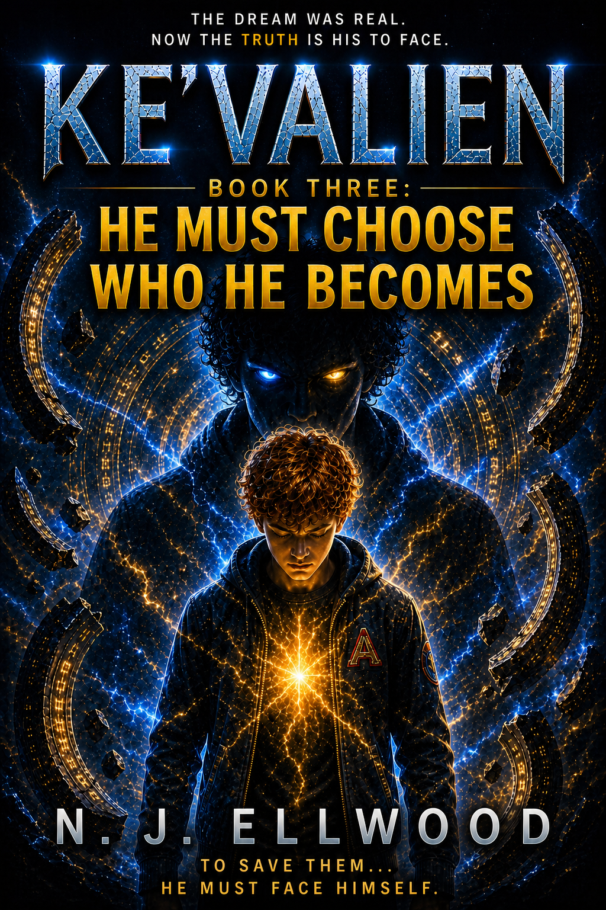
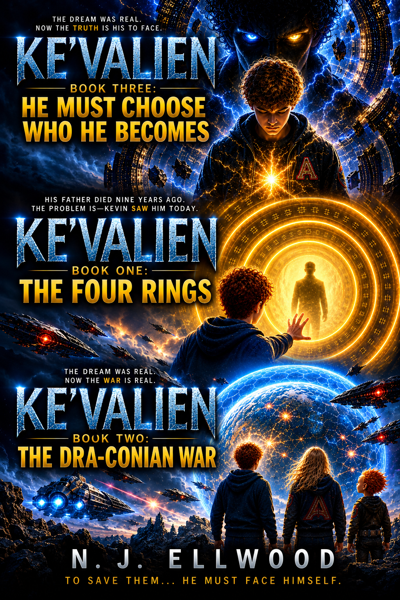

KE'VALIEN TRILOGY · BOOK THREE

Ke'Valien:
He Must Choose Who He Becomes
The final game will test more than Kevin's powers.
THE STORY
A Mysterious Entity. A Series of Games. One Final Choice.
Kevin has crossed worlds, survived a war and discovered abilities he never knew he possessed. Now the greatest challenge of his journey is waiting for him.
Kevin has already learned that the universe is far stranger than he once believed. He has encountered alien worlds, impossible technology and dangers capable of changing the lives of everyone he loves.
Now a mysterious Entity has turned Kevin's future into a game. Each new challenge takes him somewhere unfamiliar, where the rules are uncertain and failure may carry a price far greater than he is prepared to pay.
The prize is almost impossible for Kevin to ignore: the chance to regain what he has lost. But as the games continue, he is forced to question why they are happening, who is controlling them and what is really being asked of him.
Kevin's powers may help him survive what lies ahead, but power cannot make the decisions for him. Before the journey ends, Kevin must decide not simply what he is capable of, but who he chooses to become.
AT THE HEART OF THE STORY
The Games
Every challenge offers Kevin hope. Every challenge also brings him closer to the truth.

The Entity's games take Kevin into situations where strength alone is not enough. He must observe, question and make decisions without ever being certain that he understands the real purpose of the test.
Each game appears to move Kevin towards something he desperately wants. That makes walking away almost impossible, even when continuing becomes increasingly dangerous.
But the further Kevin goes, the harder it becomes to ignore a more troubling question: is he playing to win, or is someone using the games to discover exactly what kind of person he will become?
POWER AND CHOICE
What Will Kevin Do With What He Has Become?
Kevin is no longer the boy who first discovered the four rings. Everything he has experienced has changed him, and his growing abilities give him choices that once would have been impossible.
But having power and knowing how to use it are not the same thing. The more Kevin can do, the more responsibility he carries for the consequences of his decisions.
His friends and family remain at the heart of those choices. Kevin wants to protect the people he loves, but the final stage of his journey asks whether wanting the right thing is enough when the way to achieve it may demand something else from him.
For Kevin, the final battle is therefore as personal as it is extraordinary. What matters most is not how powerful he becomes. It is what he decides to do with that power.
WHY THIS STORY MATTERS
Who We Become Is a Choice
He Must Choose Who He Becomes brings Kevin's journey back to its most personal question. The worlds may be alien and the dangers extraordinary, but Kevin's defining challenge is one everyone eventually faces: our experiences shape us, but they do not have to decide who we become.